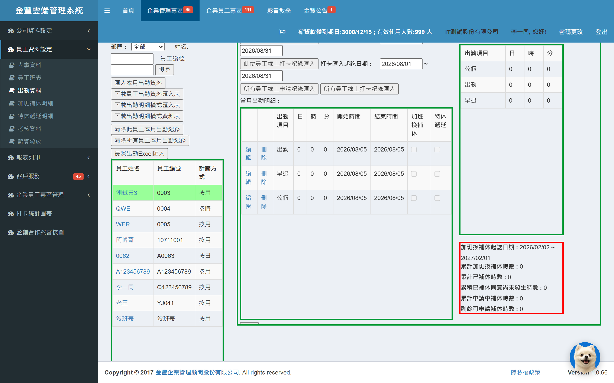
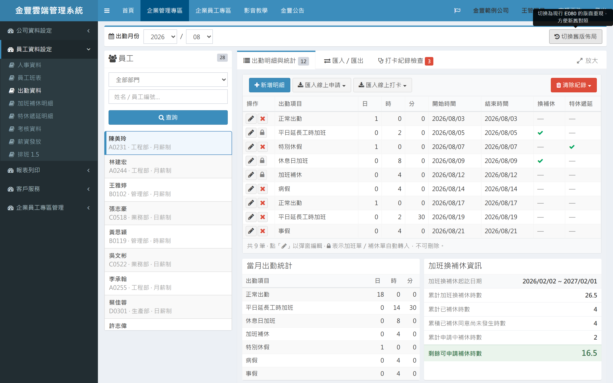
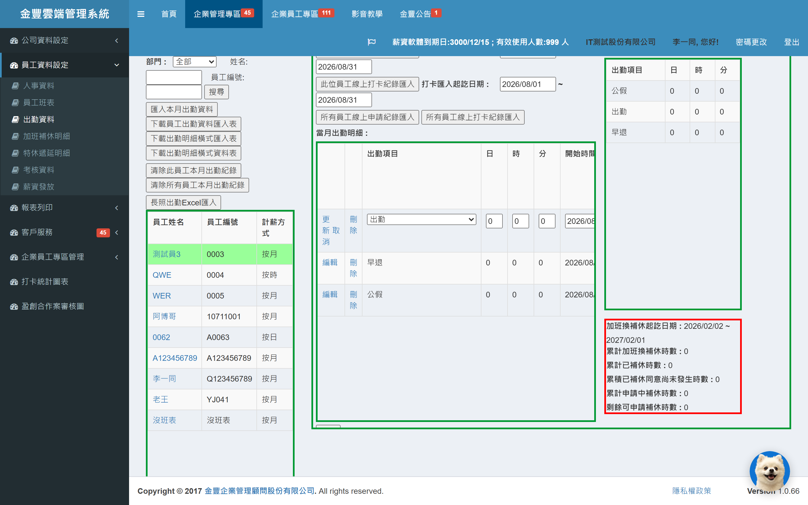
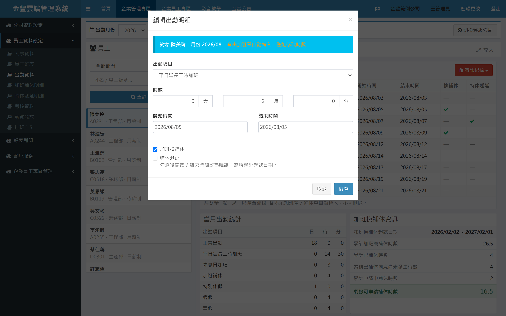
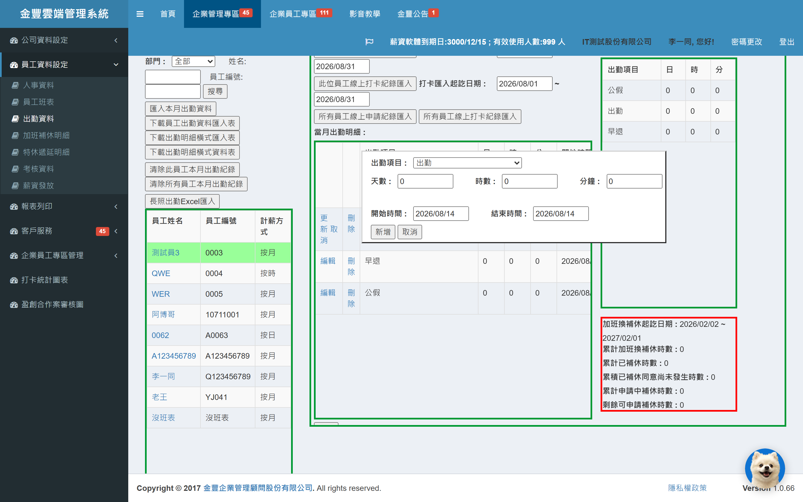
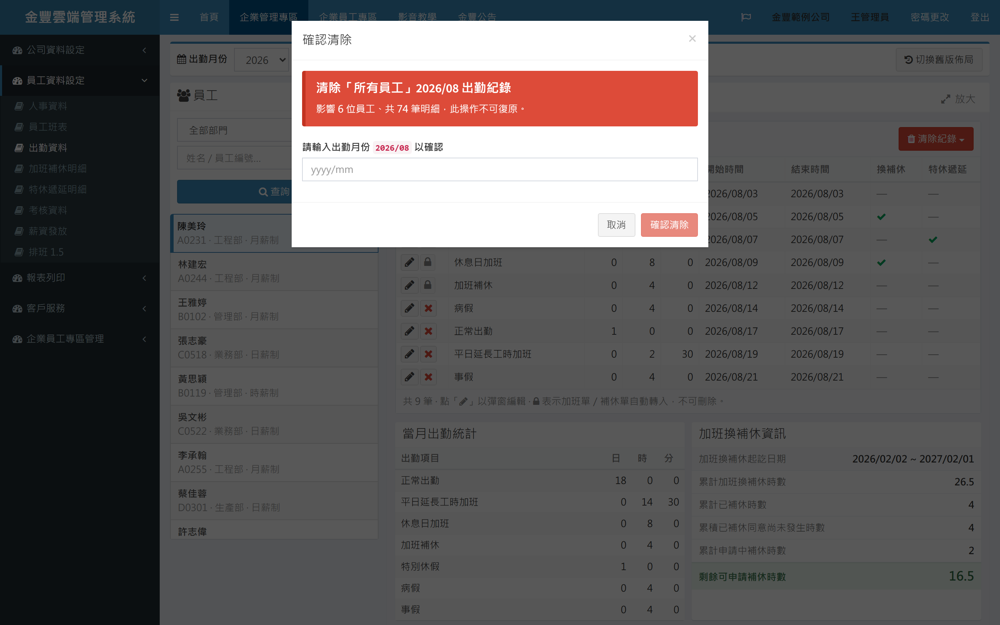

出勤資料頁是每月出勤登打、線上單據匯入、打卡紀錄檢查的核心作業頁面。 本次以不動正式系統的方式，先做出可以實際點擊操作的改良原型， 將原本擠在同一畫面的十多顆按鈕，重新整理成清楚的作業動線。
▶ 開啟互動原型（可實際點擊操作） 原型為靜態展示頁，使用假資料，不會影響正式系統。內建「切換舊版佈局」按鈕，可一鍵切回現行版面現場對照。十多顆同色按鈕改為三個作業頁籤，一次只看到當下任務需要的功能。
「清除所有員工紀錄」需輸入月份才能執行，杜絕一鍵誤刪整月出勤。
逐格修改改為彈出視窗編輯，欄位有標題、有空間，畫面不再整頁重新整理。
版面改為自動適應，小筆電到大螢幕都完整呈現，不再被裁切出現雙層捲軸。
現行頁面功能齊全，但十多年累積下來，操作介面已出現以下問題：
匯入、下載範本、清除單人、清除全部……全部長得一模一樣、沒有分組，新手要靠記憶找按鈕，日常動作與危險動作混在一起。
「清除所有員工紀錄」按下去只跳一個「確定/取消」，手滑點過就會刪掉全公司整月出勤資料。
「自動轉入的加班單與補休單不會被刪除」這類關鍵規則，只有滑鼠停在按鈕上才看得到，實務上幾乎沒人發現。
在表格內直接編輯，一列九個欄位擠在窄欄裡；改一個下拉選單整頁就重新整理一次，還得自動捲動找回剛剛編輯的位置。
各區塊高度、寬度都是固定像素，筆電或投影解析度較低時內容被切掉，出現「捲軸裡還有捲軸」。
匯入區間與出勤月份不一致時，要等按下按鈕才跳警告；使用者常在警告出現後才發現填錯。

所有功能攤平在同一畫面：左欄十多顆同色按鈕無分組、無主次，「清除所有員工」混在日常按鈕之中；固定高度的綠框、紅框面板讓內容被裁切。

條件在上、名單在左、作業分三個頁籤；危險動作獨立為紅色選單，打卡異常數量直接顯示在頁籤上，補休剩餘時數綠底大字呈現。

按下「編輯」後整列變成擠在窄欄裡的輸入框與下拉選單，右側欄位被推出畫面；改一個下拉整頁就重新整理一次。

欄位有標題、分區與呼吸空間；由加班單自動轉入的資料會明確提示「僅能修改時數」，不再靠猜。

「新增」開啟的是絕對定位的自製面板：無遮罩、無框線階層、蓋在表格上，位置寫死在畫面 45% 處。

標準 Bootstrap 彈窗有遮罩與焦點管理；高風險的「清除所有員工」需輸入月份字串才能按下確認，並先揭示影響人數與筆數。
點任一張圖可開啟全螢幕新舊並排對照。「改良前」為正式系統（測試環境資料）實際畫面；「改良後」為互動原型畫面。原型內建「切換舊版佈局」按鈕，簡報時可現場一鍵對照。
畫面依「先選條件 → 再選人 → 再作業」的順序重新分層：
精選 12 項使用者最有感的改良（完整 24 項清單見文末附錄）：
| 項目 | 原本 | 改成 | 好處 |
|---|---|---|---|
| 功能編排 | 10+ 顆同色按鈕堆在左欄，無分組 | 依任務拆成三個頁籤 | 一次只看到當下任務需要的功能，畫面清爽 |
| 清除防呆 | 清除全部員工紀錄只有一個確認框 | 彈窗顯示影響人數/筆數，且需輸入月份字串才能按下確認 | 高風險操作加上刻意門檻，整月資料不再一鍵誤刪 |
| 危險動作隔離 | 清除按鈕與一般按鈕同色並排 | 獨立紅色選單，放在工具列最右側 | 視覺上與日常動作分開，降低誤點 |
| 明細編輯 | 表格內逐格編輯，改下拉整頁刷新 | 彈出視窗編輯，欄位分區、天/時/分清楚標示 | 編輯有呼吸空間，不再刷頁、不再跳位 |
| 關鍵規則呈現 | 「自動轉入單據不會被刪除」只藏在滑鼠提示 | 選單說明、表尾圖例、鎖頭圖示提示、編輯彈窗四處可見 | 規則在使用當下看得到，減少詢問與誤解 |
| 不可刪除列 | 刪除鈕直接消失，像是漏掉 | 顯示鎖頭圖示＋來源說明（如：由加班單自動轉入） | 使用者知道「不是壞了，是不能刪」 |
| 跨月匯入 | 按下按鈕才跳警告攔截 | 區間預設同步出勤月份；相符顯示綠色提示、跨月顯示黃色警示且按鈕變紅 | 從事後攔截變成事前預防＋即時回饋 |
| 匯入範圍選擇 | 「此員工/所有員工」做成四顆並排按鈕 | 收成兩個下拉選單，第二層再選範圍 | 按鈕數減半，範圍選擇清楚明確 |
| 檢查結果 | 純文字清單框，無欄位、不能排序 | 表格化（姓名/部門/電話/班別/訊息）＋可匯出 Excel | 可讀、可對齊、可追蹤 |
| 異常提醒 | 要點進檢查才知道有無異常 | 頁籤上顯示紅色異常筆數＋上次檢查結果摘要 | 異常主動被看見，而非被動查詢 |
| 補休資訊 | 數字擠在紅框小面板 | 逐項條列，「剩餘可申請補休時數」綠底大字 | 最常被詢問的數字一眼可見 |
| 螢幕適應 | 各區固定像素高寬，小螢幕被裁切 | 版面自動適應三種螢幕寬度，表頭捲動時固定不消失 | 小筆電到大螢幕都完整可用 |
原型刻意零新依賴，全部沿用系統既有技術棧，將導入成本降到最低：
目前完成的是可操作的靜態原型，尚未修改正式系統。建議依下列階段導入：
以本原型為畫面與行為規格，收斂資訊部門、顧問師與管理層的意見，定版後不再重新發散。
將原型的頁籤結構、工具列、員工清單移植到正式 E080 頁面，先做到「長得一樣」，後端邏輯不動。
逐格編輯改為彈窗編輯、清除防呆（輸入月份確認）、跨月檢核前移、檢查結果表格化。此階段工作量最大，可再細分批次上線。
以實際月結流程演練（登打 → 匯入 → 檢查 → 清除重匯），由人資實際操作驗收後切換上線。
| # | 原本 | 改成 | 好處 |
|---|---|---|---|
| 1 | 左欄堆 10+ 顆同色按鈕 | 依任務拆成三個頁籤：明細與統計 / 匯入匯出 / 打卡檢查 | 一次只看到當下任務需要的動作 |
| 2 | 匯入「此員工/所有員工」為 4 顆並排按鈕 | 收斂成 2 個下拉選單，第二層選作用範圍 | 按鈕數減半，範圍選擇明確 |
| 3 | 清除紀錄按鈕與一般按鈕同色 | 獨立紅色下拉選單置於工具列右側 | 破壞性動作視覺隔離，降低誤點 |
| 4 | 清除全部只有一個確認框 | 彈窗顯示影響人數/筆數，需輸入月份字串才啟用確認鈕 | 高風險操作加上刻意摩擦 |
| 5 | 「自動轉入單據不會被刪除」只在滑鼠提示 | 選單說明、表尾圖例、鎖頭提示、編輯彈窗四處可見 | 關鍵規則在使用當下可見 |
| 6 | 表格內逐格編輯＋下拉整頁刷新 | 彈窗編輯，欄位分區、天/時/分標示清楚 | 不需整頁刷新、不需捲動補救 |
| 7 | 不可刪除的列直接隱藏刪除鈕 | 保留位置改為鎖頭圖示＋來源說明 | 使用者知道「不是漏了，是不能刪」 |
| 8 | 編輯/刪除是文字連結，佔欄寬 | 鉛筆/叉/鎖圖示按鈕，操作欄縮窄 | 寬度還給資料欄，減少橫向捲軸 |
| 9 | 員工清單 10 欄表格（7 欄 CSS 隱藏） | 卡片式：姓名粗體＋編號 · 部門 · 計薪方式副標 | 掃視更快，不輸出用不到的欄位 |
| 10 | 選中員工只靠綠色底色 | 藍色側條＋淡藍底，姓名同步顯示於工具列/彈窗/確認文字 | 隨時知道目前操作對象 |
| 11 | 部門、姓名、員工編號三個獨立輸入 | 部門下拉＋單一關鍵字框（姓名/編號合併） | 少一個欄位、少一次判斷 |
| 12 | 年份 23 個寫死選項＋AutoPostBack | 頁面頂端月份列，作為全頁唯一全域條件 | 條件與動作分層清楚 |
| 13 | 匯入區間空白，按下才比對跨月警告 | 區間預設同步出勤月份；相符綠色、跨月黃色警示且主鈕變紅 | 事後攔截 → 事前預防＋即時回饋 |
| 14 | 4 段各自宣告的 datepicker 初始化 | 統一一行初始化所有日期欄位 | 行為一致，新增欄位免補程式 |
| 15 | 4 個 display:none 假彈窗＋6 個自訂顯示/隱藏函式 | 全部改為標準 Bootstrap modal | 有遮罩、ESC 關閉、焦點管理 |
| 16 | 檢查結果用純文字清單框 | 表格化＋寬彈窗＋匯出 Excel | 可讀、可對齊、可延伸 |
| 17 | 檢查異常無入口提示 | 頁籤紅色異常筆數＋上次檢查摘要 | 異常主動被發現 |
| 18 | 加班換補休資訊擠在紅框面板 | 逐項條列，剩餘可申請時數綠底大字 | 最常被問的數字一眼可見 |
| 19 | 固定像素高寬＋float＋水平捲軸 | CSS Grid＋視窗比例高度＋三個響應斷點 | 各種螢幕完整可用，去除雙層捲軸 |
| 20 | 表頭捲動即消失 | 表頭固定（sticky） | 長清單捲動仍知道欄位意義 |
| 21 | 無法暫時擴大工作區 | 放大/還原模式：隱藏條件與名單，表格近全螢幕 | 大量核對時獲得全寬視野 |
| 22 | 日/時/分數字左對齊 | 數字右對齊＋等寬數字 | 位數對齊，核帳比對更快 |
| 23 | 測試用按鈕殘留在正式頁面 | 新版不保留 | 正式頁面不含測試元件 |
| 24 | 長照匯入按鈕樣式與其他不一致 | 併入「匯入/匯出」頁籤 Excel 匯入區，樣式統一 | 視覺一致、功能歸位 |